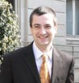
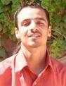

| GlassFish Community Building an Open Source Java EE 5 Application Server |
 |
| Download it |
 |
| Use it |
 |
| Improve it |
|
|
|
|
The core of the GlassFish community are its developers. This page is intended to spotlight some of its developers and contributors expanding on the Wiki's Page on GlassFish People; we hope to include most developers in the community over time. The most recent addition is Mike Youngstrom .
| Alan Hudson |
|
Alan has been involved in virtual reality systems for the past 10 years. He is the working chair for the source task group at the Web3D Consortium and a frequent participant in 3D and XML standards work. He has been also on the Board of Directors for the Web3D Consortium for three years and is the current Vice President of the Consortium. His previous projects include the development of immersive training environments, an online library publishing and automation system, and software for collaborative manufacturing design. Alan has lead both development and content teams and has in-depth knowledge of both the technical and political aspects of 3D graphics, as well as a solid base in computer science and industry experience in many aspects of Internet development. Alan is a member of FI development team, a W3C XBC working group member, and chair for X3D binary working group. |
| Aleksei Valikov (Lexi) |
|
Lexi is a computer scientist with extensive programming background, especially in Java, XML technologies and relational databases. He holds a Ph.D. in Computer Science and is currently work in the Research Centre of Computer Science, Karlsruhe, Germany (FZI). Authored a popular practical guide into XSLT The Technology of XSLT, published in Russian. Some of lexi's projects include hyperjaxb and hyperjaxb2, providing relational persistence for XML objects with Hibernate and JAXB 1.0 and JAXB 2.0, hyperUBL, an application of hyperjaxb to UBL, and JAXB-validation. |
| Benjamin Morrell Gordon |
|
Ben is porting jaxmail to the new implementation of JAX-WS 2.0 implementation. More info TBD. |
| Cay Horstmann |
|
Cay Horstmann is author of Core Java (Sun Microsystems Press 1996-2004), co-author of Core JSF (Sun Microsystems Press 2004) and Enterprise Java for Elvis (Sun Microsystems Press, to appear in 2006). Cay is professor of computer science at San Jose State University. He is a computer science series editor at Prentice-Hall and a frequent speaker at computer industry conferences. For four years, Cay was VP and CTO of an Internet startup that went from 3 people in a tiny office to a public company. |
| Changshin Lee (ias) |
|
Changshin Lee (a.k.a. Ias /eeh-ah-s/) is a chief software researcher and developer in TmaxSoft, Korea. His activities in computer software lie mainly in standardization and open source software development in Java. He joined JCP in 2002 and has participated in multiple JSRs including JAX-WS 2.0, SAAJ 1.3 and EWS (JSR 109) 1.2. He is also a committer in several open source projects such as Apache Axis, Beehive, Mirae, and Fast Infoset at Java.net. At Tmax, he develops the JEUS App Server, focused in the areas of XML and WS, in terms of both specs and reference implementations that are important components of GlassFish as the Java EE 5 RI. He graduated from Seoul National University (BS in Mathematics, 1999) and University of Newcastle upon Tyne (MSc in System Design for Internet Applications, 2005). |
| Gordon Yorke |
|
He has been working on Object to Relational Mapping (Persistence) and JavaEE since 1999 as a member of the TopLink development team. First at The Object People, then with WebGain and through the aquisition by Oracle. Gordon is currently a principal contributor to the glassfish entity-persistence module which provides TopLink as the EJB 3.0 persistence implementation. |
| Don Brutzman |
|
Don's research interests include underwater robotics, real-time 3D computer graphics, artificial intelligence and high-performance networking. Currently he leads the Extensible 3D (X3D) ISO Specification Working Group for the Web3D Consortium, and also directs development of the Extensible Modeling and Simulation Framework (XMSF). XMSF endeavors include XML Schema-based Binary Compression (XSBC), DIS-XML and XML Tactical Chat (XTC). XMSF efforts are demonstrating that fast web services are feasible for real-time modeling & simulation in combination with deployed command and control (C4I) applications. Don is contributing to the FI project. |
| John Swift |
|
John Swift is currently a member of the SOA and Web Services framework team developing Java infrastructure and middleware solutions involving technology and standards such as JAX-RPC, X.691, X.694 and Liberty ID-FF/ID-WSF. Before that John was a Chief Engineer at WorldCom and UUNET working on several global distributed systems based on CORBA and RMI using Java and C++. John has also participated in open source endeavors including the Mozilla project. John is contributing to porting the jaxmail project to the new JAX-WS implementation. |
| Jacob Hookom |
|
He started consulting at 16 and has since held titles from Information Architect to Product Manager. In his free time, he contributes to Sun's JavaServerFaces RI and Glassfish projects and was an active member of the JavaServerFaces and Web Tier Expert Groups. After JavaOne last year, he started a Java.net project of his own, called 'Facelets', which is a view definition framework for JavaServer Faces. His sights are currently set on taking JavaServer Faces to the next level as a rich, web application platform. Jacob is contributing to the javaserverfaces and facelets projects and maintains a blog. |
| Jean-Baptiste Bugeaud |
|
Jean-Baptiste Bugeaud is an entrepreneur and Java enthustiast. Jean-Baptiste Bugeaud (30) started his career working with Pascal, Objective C and C++. In 1997 he met the Java language and became a Java enthusiast. Soon after he joined Probase, a Delphi expert company, as a consultant to lead the new Java & JBuilder offering. Probase was purchased by Fi System, a French web agency, where he joined the J2EE Consulting group. There he worked on major Java & J2EE projects such as the first version of the Vizzavi portal. Today, after spending 3 years at a major international IT company as architect and coordinator, he has started his own company, www.aide.info, a service that provides a direct online IT assistance for small businesses. During his career, Jean-Baptiste has spoken at many conferences and also worked on the technical validation of the first French version of "Core Java". |
| Jerome Dochez |
|
Jerome has been working in J2EE technologies since 2000. He was the architect for the Java AVK , then technical lead for deployment and web services. He also provided the Mac OS X support of the GlassFish project. Before J2EE, still in the Java Software organization, he participated to the JavaBeans first specification (with Eduardo) and moved on to create the Java Plug-in. Today, he is the GlassFish architect and overall technical lead. He is looking at the future of the implementation as well as driving the stability of the next release of GlassFish. He still participates to the JSR109 implementation as coding remains a fun part of the job... |
| Kirill Grouchnikov |
|
Kirill is a community lead in the Java WS and XML community and has have an active blog on Java.Net. Some of Kirill's projects at java.net include bindmark, a comparative benchmark for Java XML binding frameworks and libraries, jaxb-workshop a collection of tools for JAXB 2.0, and substance - a modern look and feel that combines Mac OS X and Windows XP elements. |
| Kohsuke Kawaguchi |
|
Kohsuke has been working on XML and XML schema languages since 2001, including specification work on RELAX NG and W3C XML Schema, and implementation work in a number of related Java artifacts, including JAXB, and JAXP. Kohsuke is the lead engineer for JAXB 2.0, XSOM and TXW. Kohsuke is very active at Java.Net and he is one of the original community leads of the Java WS & XML community. Kohsuke has many other projects on java.net, including several that provide automation for Java.Net tasks. Here is a few: args4j, com4j, hudson, parallel, relax-ng, relaxngcc, and xsdlib. |
| Mark Hansen |
|
Mark has spent the last 4 years researching the use of Web Services standards (e.g., SOAP, WSDL, WS-ReliableMessaging, etc.) for Service Oriented Architecture (SOA). His upcoming book, "SOA Integration using Java Web Services" (Prentice Hall) is a detailed, technical, "how to" for software architects. He has also been a Visiting Scholar at the MIT Sloan School doing academic research on Web Services with Professor Stuart Madnick. Prior to founding Javector Software, Mark was the founder and president of Kinderhook Systems, Inc. - an eBusiness consulting firm. Mark sold Kinderhook to Xpedior, Inc. in 1999 and was Executive Vice President of that company until he left to start Javector. During the 1990s, Mark was also a founder and the VP Technology at QDB Solutions, Inc. - a Cambridge, MA software company that developed tools for data quality management. After a series of mergers, the QDB tools are now a part of IBM's WebSphere suite of products marketed under the name IBM WebSphere AuditStage. Mark earned a PhD from MIT's Laboratory for Computer Science. He also holds an MBA from MIT's Sloan School of Management. He lives in Scarsdale, NY with his wife and three children. |
| Masoud Kalali |
|
 Masoud Kalali is a sofware engineer at Nabh Inc. Masoud Kalali holds a software engineering degree and has been programming for the last 8 years. Experienced with .Net and some other languages, his platform of choice is Java. He spends much of his time in system design and server side development and database Development. Is interested in portal systems and related JSRs and is a contributer of StringBeans, a very advanced and well designed / implemented jsr-168 compliant portal. Masoud is currently preparing for a Masters of Science Software Engineering. He has an active blog on java.net. |
| Matthew L. Daniel |
|
Matthew has almost 10 years of Java EE experience and enjoys working in Java and almost any other object-oriented language. He says his current interests include software engineering automation and metrics, the study of legacy systems and languages (where he hopes to stand on the shoulders of others) and almost anything that advances the liberation of information. He says that is why he has been an avid participant in OpenSource projects. His first OpenSource contributions were to JMeter and Tomcat back in the early 2000s and has contributed numerous patches for other projects while trying to "combat entropy and spread the message that 'Code is Poetry.'" Matthew got his start in a 15 person company and says that he loves the small company work environment. He graduated with a BSCS from the Georgia Institute of Technology in 1999. |
| Mike Youngstrom |
|
He is currently working as an on site contractor for The Church of Jesus Christ of Latter Day Saints (http://www.lds.org) as a Senior Software Engineer. Mike has been a fan of Java since 98, has programed professionally in Java since 2001, and has been developing applications with JSF since its release and is currently help backport relevant issues found in JSF 1.2 to JSF 1.1. Mike has a wife, two kids, and calls Lehi, UT his home. |
| Sanjeeb Sahoo |
|
Sahoo is an engineer at Sun Microsystems, working in Java EE application server development engineering group. He contributes to GlassFish project. Besides that he is also involved in writing a portability checking tool for Java EE applications. Prior experiences include working in C++ language binding for an object database management system, developing enterprise applications using CORBA & messaging middleware. Although his full name is Sanjeeb Kumar Sahoo, he prefers to be called by his last name *Sahoo*. See his blog on java.net. |
| Stan Silvert |
|
Since earning a degree in computer science from Georgia Tech in 1991, he has held many senior development positions, mostly as a Java Architect. Stan has been a committer to the JBoss Application Server and the Apache MyFaces JSF implementation. He currently works on the Sun JSF implementation which is used in both GlassFish and JBoss AS 5. Stan also represents JBoss on the JSF expert group (JSR-252). |
| Tom Ware |
|
He has been working on JavaEE and peristence for 5 1/2 years as a member of the TopLink development team first at WebGain and through the aquisition by Oracle. Prior to that he did research work for a Telecommunications company focusing on Agent based systems, particularly as they apply to the telecommunications feature-interaction problem. Tom is currently working on the entity-persistence module which provides TopLink as the EJB 3.0 persistence implementation. |
| Vince Kraemer |
|
Vince has worked at Sun Microsystems Vince has also written code in languages like C and C++. He has worked on applications for image processing and handling and development tools for rule-based systems. And has a Master's degree in CS from UC, Santa Barbara. |
| Wonseok Kim |
|
Wonseok has been working on EJB and DB persistence technologies for Tmax Soft in the Java EE platform. Prior to Java EE, he had developed NMS, an OSS systems for telecommunications in Java. Wonseok has participated in Java EE technologies JSRs such as JSR 244 (Java EE 5) and JSR 220 (EJB 3.0). Wonseok is currently contributing to GlassFish ejb, persistence and other projects and maintains his blog. |
 Alan is a senior software developer
located in Seattle, Washington.
He is also the president of
Alan is a senior software developer
located in Seattle, Washington.
He is also the president of  Aleksei
Valikov (lexi) is a senior software engineer working in
Karlsruhe, Germany.
Aleksei
Valikov (lexi) is a senior software engineer working in
Karlsruhe, Germany.  Ben Gordon is a Principal Engineer
for America Online located in the
USA.
Ben Gordon is a Principal Engineer
for America Online located in the
USA.  Cay is an author of several books and professor of computer science.
Cay is an author of several books and professor of computer science.  Gordon Yorke is a Principal
Software Engineer for Oracle working out of Ottawa, Ontario, Canada.
Gordon Yorke is a Principal
Software Engineer for Oracle working out of Ottawa, Ontario, Canada. Don Brutzman is
a computer scientist and Associate Professor working
in the Modeling Virtual Environments & Simulation (MOVES) Institute
and Undersea Warfare Center at the Naval Postgraduate School.
Don Brutzman is
a computer scientist and Associate Professor working
in the Modeling Virtual Environments & Simulation (MOVES) Institute
and Undersea Warfare Center at the Naval Postgraduate School.  John is a Senior Software Engineer
at AOL.
John is a Senior Software Engineer
at AOL.  Jacob Hookom is a development lead
with McKesson Medical-Surgical,
designing supply management solutions on the web, desktop, and
handheld for a multitude of markets and services.
Jacob Hookom is a development lead
with McKesson Medical-Surgical,
designing supply management solutions on the web, desktop, and
handheld for a multitude of markets and services.  Jerome Dochez is a Senior Staff
Engineer at Sun Microsystems located in Santa Clara, California (USA).
Jerome Dochez is a Senior Staff
Engineer at Sun Microsystems located in Santa Clara, California (USA).  Kirill
Grouchnikov has been writing software for the last 15 years, the
last 7 doing it for a living.
He is currently working as a senior software developer in a large
corporate environment in Israel.
Kirill
Grouchnikov has been writing software for the last 15 years, the
last 7 doing it for a living.
He is currently working as a senior software developer in a large
corporate environment in Israel.  Kohsuke is a staff engineer at Sun
Microsystems located in Santa Clara,
California (USA).
Kohsuke is a staff engineer at Sun
Microsystems located in Santa Clara,
California (USA).  Mark is the founder of Javector Software. Javector is developing tools for SOA Integration using Java and Web Services.
Mark is the founder of Javector Software. Javector is developing tools for SOA Integration using Java and Web Services.
 Matthew is a
principal software engineer at a start-up company in
Atlanta, GA.
Matthew is a
principal software engineer at a start-up company in
Atlanta, GA.  Mike Youngstrom is a Software Engineering Consultant for
Mike Youngstrom is a Software Engineering Consultant for  Sahoo is an engineer at Sun Microsystems.
Sahoo is an engineer at Sun Microsystems.  Stan is a Core Developer for JBoss, a division of RedHat. He resides in
Atlanta, GA.
Stan is a Core Developer for JBoss, a division of RedHat. He resides in
Atlanta, GA.
 Tom Ware is a Principal Software Engineer for Oracle working
out of Ottawa, Ontario, Canada
Tom Ware is a Principal Software Engineer for Oracle working
out of Ottawa, Ontario, Canada Vince Kraemer is a staff engineer at Sun Microsystems.
Vince Kraemer is a staff engineer at Sun Microsystems. Wonseok Kim is a senior researcher and developer at Tmax Soft, Korea.
Wonseok Kim is a senior researcher and developer at Tmax Soft, Korea.